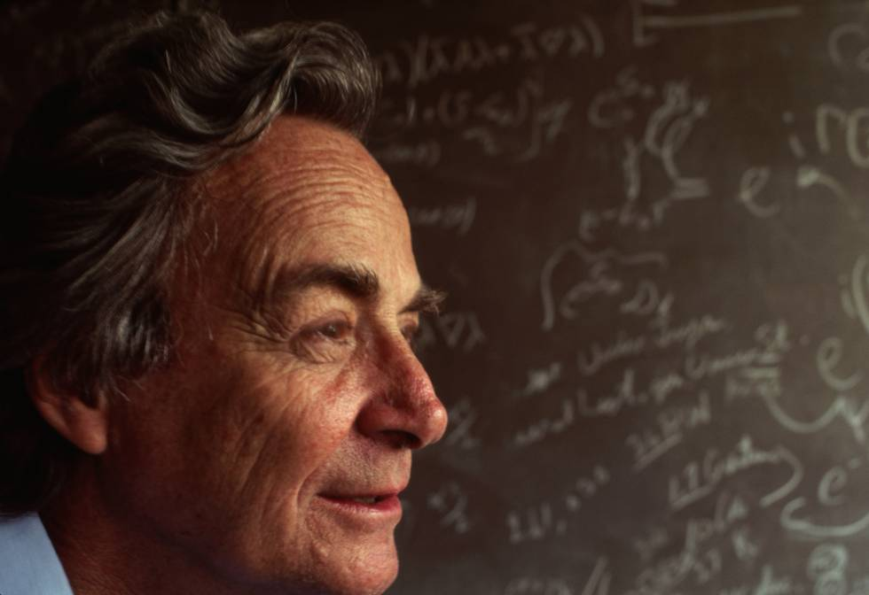
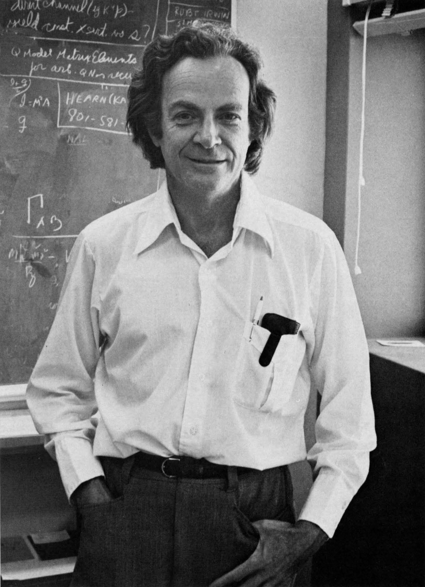

Richard Phillips Feynman
“Study hard what interests you the most in the most undisciplined, irreverent and original manner possible.”

1918 – 1988
Timeline
- Born on May 11, 1918, in Queens, New York City.
- Feynman attended Far Rockaway High School, in Queens. Upon starting high school, Feynman was quickly promoted into a higher math class. An IQ test administered in high school estimated his IQ at 125.
- When Feynman was 15, he taught himself trigonometry, advanced algebra, infinite series, analytic geometry, and both differential and integral calculus.
- He entered MIT in 1935 and, after four years study, obtained his bachelor's degree in 1939.
- He was Research Assistant at Princeton (1940-1941)
- worked on the atomic bomb project at Princeton University (1941-42) working on a device called an isotron, intended to electromagnetically separate uranium-235 from uranium-238.
- Feynman received a Ph.D. from Princeton in 1942, In his doctoral thesis titled "The Principle of Least Action in Quantum Mechanics".
- On June 29, 1942, He and Arline Greenbaum took the ferry to Staten Island, where they were married in the city office, despite the knowledge that she was seriously ill with tuberculosis. Feynman could only kiss Arline on the cheek. After the ceremony he took her to Deborah Hospital, where he visited her on weekends.
- Feynman worked on the atomic bomb project at Los Alamos (1943–45), he became the youngest group leader in the theoretical division of the Manhattan Project. With the head of that division, Hans Bethe, developed the Bethe–Feynman formula for calculating the yield of a fission bomb.

- Informed that Arline was dying, Feynman drove to Albuquerque and sat with her for hours until she died on June 16, 1945.
- In the autumn of 1945, Feynman was appointed as a professor of theoretical physics at Cornell University (1945-1950). At first he devoted himself to teaching and put his research aside.
- In the early 1950s Feynman provided a quantum-mechanical explanation for the Soviet physicist Lev D. Landau’s theory of superfluidity.
- In 1950 he became professor of theoretical physics at the California Institute of Technology (Caltech), where he remained the rest of his career.
- in 1954, the Atomic Energy Commission (AEC) notified him that he had won the Albert Einstein Award, which was worth $15,000 and came with a gold medal.
- In 1958 he and the American physicist Murray Gell-Mann devised a theory that accounted for most of the phenomena associated with the weak force, which is the force at work in radioactive decay.
- He and Gweneth Howarth married on September 24, 1960, at the Huntington Hotel in Pasadena.
- They had a son, Carl, in 1962, and adopted a daughter, Michelle, in 1968.
- In 1962 Feynman won the AEC's Ernest Orlando Lawrence Award.
- In 1965 he was elected a foreign member of the Royal Society, London (Great Britain).
- Schwinger, Tomonaga and Feynman shared the 1965 Nobel Prize in Physics "for their fundamental work in quantum electrodynamics, with deep-ploughing consequences for the physics of elementary particles".
- In 1972 received the Oersted Medal.
- In 1974, Feynman delivered the Caltech commencement address on the topic of cargo cult science, which has the semblance of science, but is only pseudoscience due to a lack of "a kind of scientific integrity, a principle of scientific thought that corresponds to a kind of utter honesty" on the part of the scientist.
- In 1977, Feynman supported his colleague Jenijoy La Belle, who had been hired as Caltech's first female professor in 1969, and filed suit with the Equal Employment Opportunity Commission after she was refused tenure in 1974.
- In 1978 received the National Medal of Science.
- In early 1979 Feyman's health had deteriorated and he had surgery for stomach cancer. and was diagnosed with liposarcoma, a rare form of cancer.
- In 1988 he was invited to join the Rogers Commission, which investigated the Challenger disaster.
- He was hospitalized at the UCLA Medical Center on February 3, 1988. A ruptured duodenal ulcer caused kidney failure, and he declined to undergo the dialysis that might have prolonged his life for a few months. Watched over by his wife Gweneth, sister Joan, and cousin Frances Lewine.
- He died on February 15, 1988, at age 69.
"I learned very early the difference between knowing the name of something and knowing something"
--Richard Feynman "The Making of a Scientist"